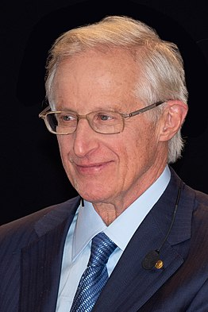
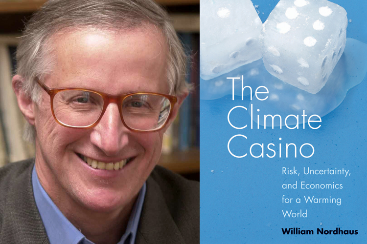
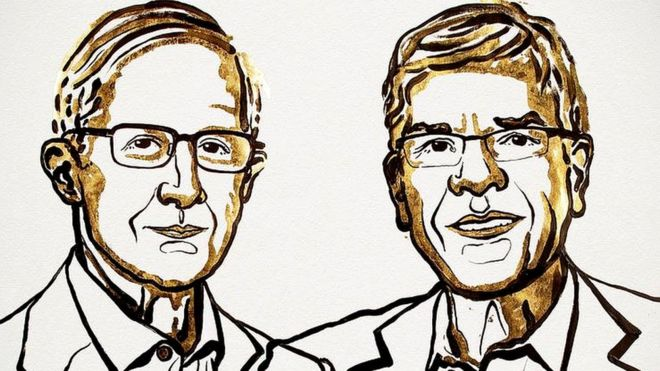

William Dawbney Nordhaus (Albuquerque, 31 de mayo de 1941) es un economista estadounidense.1 El 8 de octubre de 2018 le fue otorgado, junto a Paul Romer, el Premio del Banco de Suecia en Ciencias Económicas en memoria de Alfred Nobel. Obtuvo la licenciatura y la maestría en la Universidad de Yale y, en 1967, el doctorado en el MIT. Es profesor en Yale desde 1967, donde además ha desempeñado varios cargos directivos, como prefecto entre 1986 y 1988 y vicepresidente de Finanzas y Administración entre 1992 y 1993. Es miembro de la Academia Nacional de Ciencias de Estados Unidos, de la cual fue electo presidente en 20132 y ha participado del panel de actividades económicas de la Institución Brookings desde 1972. Durante el gobierno de Jimmy Carter, entre 1977 y 1979, fue integrante del Consejo de Asesores Económicos. Desde 1999 es miembro de la Real Academia Sueca de Ciencias de Ingeniería.
Obras
Es autor de varios libros. Junto con Paul Samuelson es coautor del libro de texto universitario Economics, del cual se han publicado 19 ediciones y ha sido traducido a 17 idiomas. En 1972 Nordhaus y James Tobin publicaron Is Growth Obsolete? (¿Es obsoleto el crecimiento?)3 un artículo en que propusieron la idea de una medición del bienestar y una economía sostenible. Ha sido un defensor de la teoría de Michał Kalecki sobre el ciclo económico basado en factores políticos, tema sobre el cual ha escrito importantes artículos, como «The Political Business Cycle» (1975)4 y «Alternative Approaches to the Political Business Cycle (1989).
Nobel de Economía: los estadounidenses William Nordhaus y Paul Romer ganan el premio por sus aportes en el campo de la innovación, el cambio climático y el crecimiento económico
"Ambos economistas han diseñados métodos para afrontar algunos de nuestros retos más fundamentales: el crecimiento sostenible en el largo plazo dentro de la economía global y el bienestar de la población mundial", explicó el secretario de la Real Academia Sueca, Göran K. Hansson. "Nordhaus fue la primera persona en crear un modelo cuantitativo que describe esa interacción entre la economía y el clima. Su modelo ahora es ampliamente usado en el mundo entero y utilizado para examinar las consecuencias en la aplicación de políticas con relación al clima como por ejemplo los impuestos a la emisión de dióxido de cárbono", añadió.